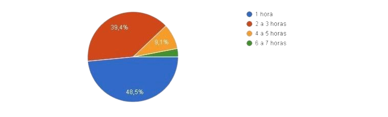

Como podem ver, de acordo com os graficos o futebol é o esporte mais popular entre a galera atleta. Com certeza ganhou desparado o numero de pessoas q praticam o futebol.
No grafico mostra que a maioria das pessoas preferem atividades coletivas do q atividades indiduais.
É dito no gráfico que o lugar onde as pessoas mais praticam atividades fisicas é na academia, oque pode facilitar em uma melhora de saude no seu cotidiano.
O grafico mostra quanto tempo as pessoas praticam atividades fisicas durante ao dia e a maior media é de 1 hora por dia pelo menos.
O grafico mostra quanto tempo as pessoas praticam atividades fisicas durante a semana e a maior media é de 1 a 2 vezes na semana para manter uma vida saudavel.